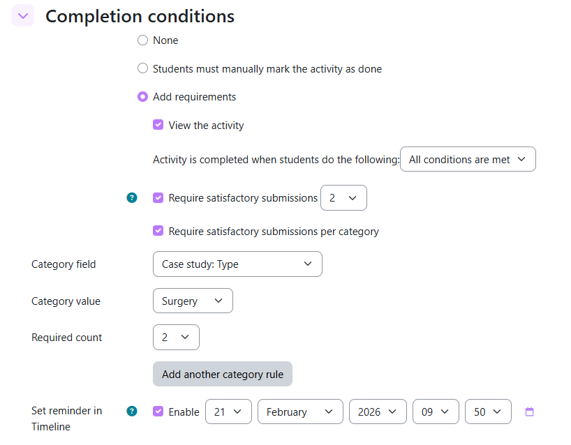
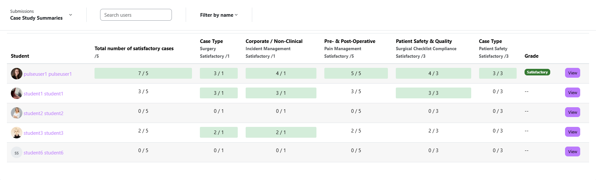

Completion Rules
Completion rules control when Moodle marks a student as having completed this Case Study activity. This feeds into course-level completion tracking, badges, and progress bars. You can require a total number of satisfactory submissions, or require submissions across specific categories — or both.
Rule types
| Rule Type | Description |
|---|---|
| Total Satisfactory Submissions | Student must have X submissions marked as Satisfactory in total, across all case studies |
| Category-Based Satisfactory Submissions | Student must have X Satisfactory submissions where a specific category field equals a specific value |
Both rules can be enabled at the same time. A student must satisfy all enabled rules to complete the activity.
Enabling completion rules
- Open the Case Study activity, click Settings (or Edit settings).
- Scroll to the Completion Conditions section.
- Enable the rules you need and set the required counts.
- Click Save and display.

Rule 1: Total Satisfactory Submissions
Enable the checkbox, then set a count. The student must have at least that many submissions marked Satisfactory across all case study entries.
| Count | Meaning |
|---|---|
| 1 | Student needs at least 1 satisfactory submission |
| 2 | Student needs at least 2 satisfactory submissions |
| 5 | Student needs at least 5 satisfactory submissions |
Rule 2: Category-Based Satisfactory Submissions
This rule requires satisfactory submissions where a specific category field contains a specific value. You can add multiple category rules — one per row — to require submissions across different categories.
Step 1 — Set up a Category Field
Before using this rule you need at least one field marked as a Category Field. Only Dropdown and Radio fields can be category fields.
- Go to Manage Fields.
- Edit a Dropdown or Radio field.
- Tick the Category Field checkbox.
- Save the field.
That field's options now become available in the completion rule configuration.
Step 2 — Configure each category rule
Each rule row has three settings:
| Setting | Description |
|---|---|
| Category Field | Choose a field that has been marked as a Category Field |
| Category Value | Choose which value in that field must be present — the dropdown populates automatically from the field's options |
| Required Count | How many satisfactory submissions matching this category value are required |
Adding and removing rules
- Click Add rule to add another category rule row.
Configuration examples
Example 1 — Total count only
Goal: Student must have 2 satisfactory case study submissions total.
| Setting | Value |
|---|---|
| Total Satisfactory Submissions | Enabled — Count = 2 |
| Category rules | None |
Example 2 — Category-based (multiple categories)
Goal: Student must have 1 satisfactory submission in "General Surgery" (Case Category) AND 1 in "Child (1–12 years)" (Patient Age Group).
| Rule | Field | Value | Count |
|---|---|---|---|
| Total Satisfactory | Enabled — Count = 2 | 2 | |
| Category rule 1 | Case Category | General Surgery | 1 |
| Category rule 2 | Patient Age Group | Child (1–12 years) | 1 |
Case Study Summaries view
The Case Study Summaries table gives teachers a real-time overview of every student's progress against the configured completion rules. Access it from the activity page by selecting Case Study Summaries from the Submissions dropdown.

Understanding the table columns
| Column | Description |
|---|---|
| Student | Student name and profile picture |
| Total number of satisfactory cases (e.g., /2) |
How many satisfactory submissions the student has out of the required total. Green highlight = rule met. |
| Category column (e.g., Case Category: General Surgery, Satisfactory /1) |
One column per configured category rule. Shows the student's count of satisfactory submissions matching that category and value. Green highlight = rule met. |
| Grade | The student's current overall grade badge — Satisfactory or Unsatisfactory |
Filtering and searching
Use the Search users field to find a specific student, and the Filter by name control to sort or narrow the list.
Learner progress reports
When completion rules are configured, the system automatically sends weekly Learner Progress Reports by email to all enrolled students, showing how close they are to meeting each rule. See Notifications & Reports for details.